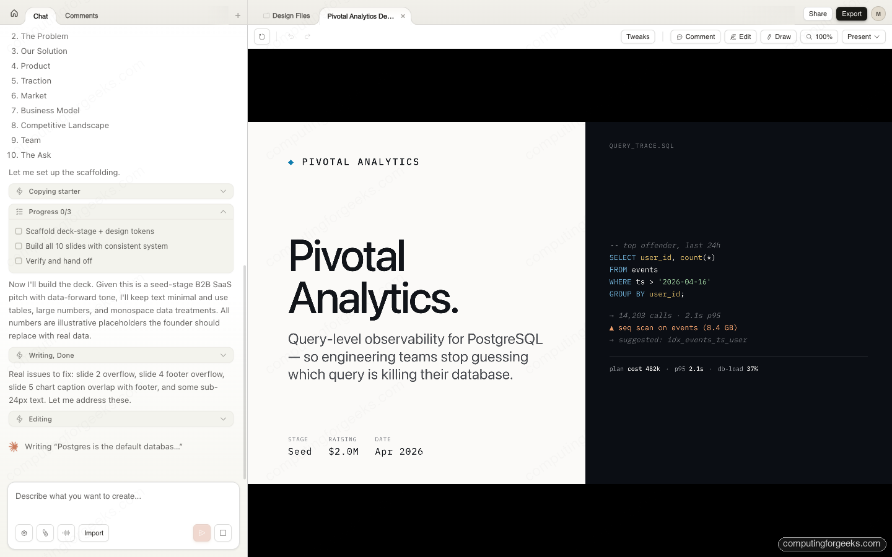
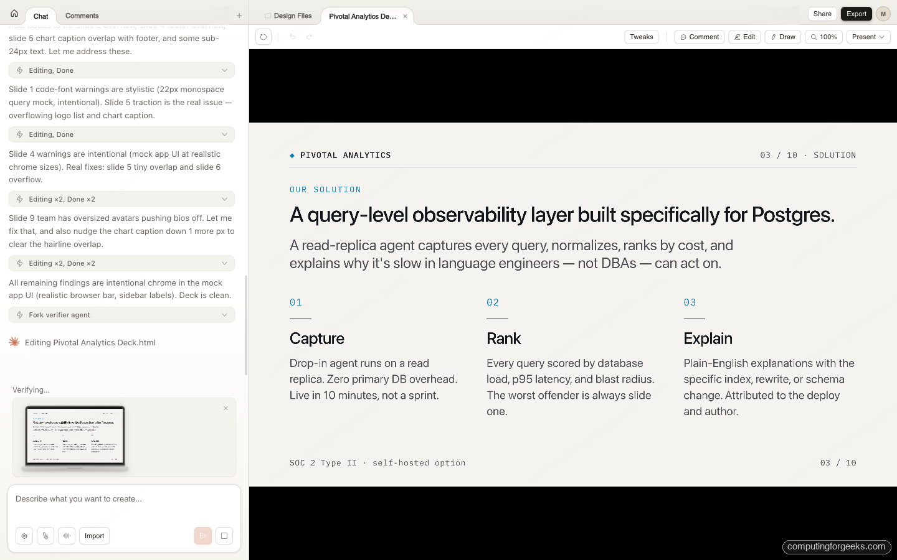
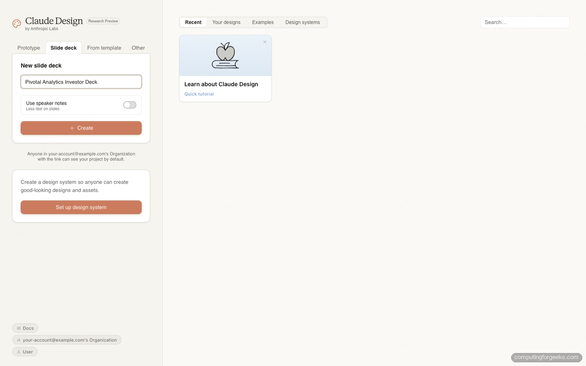

📸 Slides reais gerados pelo Claude Design
Caso real: "Pivotal Analytics" — pitch deck seed (B2B SaaS de query analysis Postgres). Prompt original cobriu 10 slides, tom "confident but honest, data-forward, no marketing fluff". Veja como o output cumpre o brief.



Pitch canônico
Title · Problem · Solution · Market · Product · Biz Model · Traction · Team · Ask · Vision.
Feeling: clean + confident · 1 ideia/slide · Charts quando útil
Data-dense growth story
Cohorts, unit economics, roadmap, team scale plan. Charts integrados via recharts CDN.
Feeling: analÃtico + credÃvel · Cohort charts · Milestones
Retrospectiva interna
Highlights Q passado · Lowlights · Learnings · OKRs novos · Speaker notes opcionais.
Tom interno casual · Speaker notes = roteiro completo
Arquitetura + código
Diagramas SVG inline · Code snippets · Before/after de otimização · Learnings.
Mono font em code · Diagrama arquitetura · Métricas de perf
Template reutilizável
8 slides fixos: Header, Metrics, Highlights, Lowlights, Product, Team, Ask, Next month.
Duplicar projeto a cada mês · Só trocar números e bullets
Transformação de relatório
Anexar PDF longo + pedir para extrair 10 ideias principais · Visualizar.
read_pdf skill invoca · 1 ideia por slide · Simplificação
Slides + exercÃcios
Mistura apresentação com prompts de exercÃcio interativos. Slides de "pause" para atividade.
Interativo · Pausas para atividade · Reflexão embutida
Visão de 12 meses
Timeline horizontal com milestones · Quarterly goals · OKRs anuais · Risk register.
Timeline SVG · Q1-Q4 · Cor por tema
Estilo Apple / Stripe
Slides minimalistas, tipografia oversized, 1 conceito-chave por slide, animação subtle.
Oversized type · Black/white · Pausas dramáticas
Resposta a licitação
Company overview · Capabilities · Team · Case studies · Pricing · Timeline.
Credibilidade total · Cases quantificados · Pricing transparente